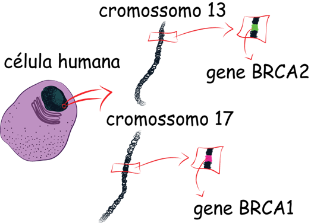

As células sanguíneas do paciente são coletadas para obtenção do DNA que está contido no núcleo de todas as suas células. O ser humano possui 23 pares de cromossomos, e o gene BRCA1 encontra-se no cromossomo 17 e o BRCA2 no cromossomo 13
